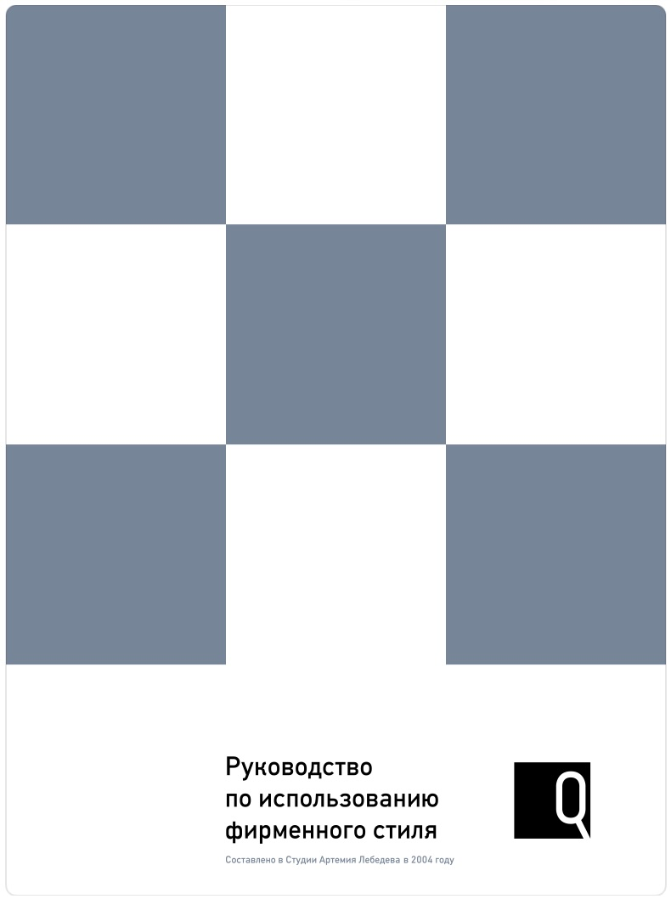

Избранные кейсы
Девять проектов, которые показывают, как маркетинг влияет на бизнес: выручку, воронку, узнаваемость и клиентскую базу.

Запуск бренда и нового дилерского центра
World Auto Experience Festival by ROX — открытие ДЦ Вешки и вывод нового бренда через experience-концепцию.

От «тратим на рекламу» к управляемому маркетингу
Calltouch + Bitrix24 + Smartis, контроль потерянных лидов, единая аналитика, автоматизация отчётности.

Avito / Auto.ru: продвижение, связанное со stock
Модельный микс, приоритеты по остаткам, контент карточек, продвижение, контроль обработки обращений.

Академия ZUND и cut4you
Запуск обучения и сертификации специалистов, новое направление cut4you, конверсия клиентов услуг в покупателей оборудования.

Выставки как производство: новые рынки для Zünd
Партнёрства с 3A Composites, «Русская кожа», «Визант». Выход на рынки текстиля и кожи. Производство на стенде ВДНХ.

Айдентика, 168 дилеров и федеральные кампании
Единый фирменный стиль ZAZ, открытие 168 ДЦ, федеральные кампании, X5 Retail Group, работа со студией Лебедева и командой Бекмамбетова.

Научный маркетинг, музей и книга к 75-летию
Патентный отдел, исследования в области научных методов, библиотека, выставки, сайт, музей научных изобретений, книга к 75-летию.

Мультибрендовый маркетинг: 7 брендов в одном портфеле
CHERY, EXEED, GEELY, BELGEE, JETOUR, OMODA, JAECOO. Годовое планирование, brand management, digital, лидогенерация, CRM.

Как я работаю: метод на одном кейсе
Диагностика → поиск потерь → гипотезы → реализация → измерение. Разбор подхода на обобщённом примере.